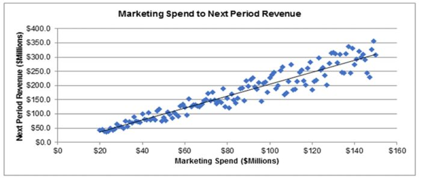

About Us
We are a company providing tax consulting services to taxpayers, assisting with the calculation, payment, and filing of periodic and annual tax returns, as well as formulating strategies to legally optimize tax liabilities.
We are a company providing tax consulting services to taxpayers, assisting with the calculation, payment, and filing of periodic and annual tax returns, as well as formulating strategies to legally optimize tax liabilities.

Mission
Assists with calculating, remitting, and filing periodic and annual tax returns. Formulating a strategy to legally optimize the tax burden. Assisting clients during audits, SP2DK (Request for Clarification on Data and/or Information) proceedings, or tax disputes. Ensuring the company complies with applicable tax regulations, both local and international.
Vision
Proficient in calculating, remitting, and filing periodic and annual tax returns.
Contact Information
Need help with tax contact tax Warrior Providing tax consultation ust turn to Tax Calculating Warrior professional, experienced, trustworthy, and responsible.
Main services
- Tax Compliance
- Tax Planning
- Audit Assistance
- Tax Dispute
Additional Resources
Visit the Directorate General of Taxes (DJP) Website for tax regulatory information in Indonesia.
If you have any questions about the material, please Email Your consultation .
For those of you seeking information or applying for a Tax Consultant Practice Permit If you are looking for information or wish to apply for a Tax Consultant Practice Permit, you can use the Tax Consultant Information System (SIKOP) application. .